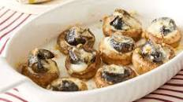

Escargot recipe

How to make Escargot
Ingredients/Tools
Instructions
-
Step 1:Prepare the snails. Melt 1 tbsp butter in a pan, then add shallot
and saute until they soften. Lastly add snails for about 2 minutes
-
Step 2:Make the Garlic butter. In a food processor or blender, add 5
tbsp butter, garlic, parsley, ad white wine. Pulse under it all comes
togethewr to make a garlic butter
-
Step 3:Cook the snails. Place one snail in each escargot compartment and
cover with 1/2 tsp of the garlic butter mixture. Then, sprinkle each
snail with a little bit of breadcrumbs. Bake at 375 degres for 10-15
minutes until browned.
-
Step 4:Prepare the baguette. Cut a baguette into slices about 1/4 inch
thick (make as many slices as you have snails). Lay the peices of bread
on a cookie sheet.
-
Melt 4 tbsp of butter in the microwave. Use a pastry brush to brush the
top of the bread with butter.
-
When the snails come out of the oven, set them aside. Turn the oven to a
broil. PLace your cokkie sheet with bread in the oven with the door
slightly ajar. Broil the bread until it toasts. Watch it closely as it
is easy to burn while broiling.